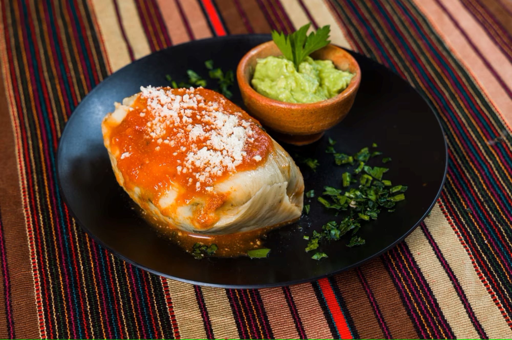

Desayunos
1. Tamales
Ingredientes
Recado
1 libra y media de tomate ciruelo maduro.
2 chiles pimientos.
3 chiles guaques.
2 onzas de ajonjolí.
2 onzas de pepitoria.
1 raja pequeña de canela.
1 onza de manteca de cerdo.
Achiote.
Sal.
Masa
1 libra y media de masa de maíz.
8 onzas de manteca de marrano.
1 maleta de hojas de plátano.
2 maletas de hojas de maxán.
3 chiles pimientos para hacer asados.
4 onzas de aceitunas.
2 libras de carne de cerdo.
Recado
Entonces, proceder a picar los tomates. Lavar y quitar las semillas del chile guaque.
Agregar un poco de mantequilla al sartén y cocinar los ingredientes anteriores.
Luego, triturar la mezcla y sazonar con un poco de sal el ajonjolí, la pepitoria, canela, achiote y sal.
Cortar la carne de cerdo en cuadritos de tamaño regular y agregar al recado.
En un sartén derretir un poco de manteca y freír la carne con el recado.
Por separado asar los chiles pimientos, pelar, partir, desvenar y quitar las semillas.
Cortar los chiles en tiras y reservar.
Masa
Deshacer y mezclar la masa de maíz en medio litro de agua y licuar. Poner a hervir 4 tazas de agua y agregar la masa, revolviendo constantemente. Cuando la masa esté espesa, batir y añadir bastante sal. Recordar que tiende a perderse el sabor de la sal durante la cocción. Si la masa está demasiado espesa, se le puede agregar agua caliente poco a poco. Cuando esté lista la masa, retirar del fuego y agregar la manteca. Batir hasta que la manteca se mezcle bien y la masa se ponga un poco brillante.

2. Rellenitos
Ingredientes
6 plátanos maduros.
1.5 tazas de agua.
1 raja de canela.
Media taza de miga de pan.
1 taza de frijol negro o frijoles volteados.
Media taza de azúcar o al gusto.
Media cucharadita de canela.
2 onzas de chocolate.
Media taza de harina.
Aceite para freír.
Procedimiento
Primero, cortar el plátano en trozos y cocinar en el agua, con canela en raja y azúcar. Luego retirar la cáscara, hacerlos puré y agregar la miga de pan. Freír el frijol previamente cocinado y licuado espeso con el azúcar, la canela en polvo y el chocolate. Darle al plátano forma de tortita, rellenar con una cucharada de frijol y cerrar en forma de rellenito. Pasar por harina y freír en aceite. Espolvorear con azúcar. Si se desea se puede sustituir el frijol por manjar.
3. Chuchitos
Ingredientes
Recado
1 chile guaque.
1/4 cucharadita de comino en polvo.
1 cucharadita de sal.
1/8 de cucharadita de pimienta.
1 kilo de carne de cerdo en trozos.
12 tomates.
Masa
2 manojos de hojas de mazorcas de maíz secas.
1 kilo de harina de maíz.
1/4 de kilo de manteca vegetal derretida.
1/4 de taza de aceite vegetal.
2 cucharaditas de sal.
1 cucharadita de consomé de pollo.
Preparación
Colocar en las hojas de mazorca un poco de masa. En el centro agregar una cucharada de recado y trozos de la carne. Envolver las hojas y atar en un extremo una tira de hoja o hilo de cocinar. Cocinar al vapor los chuchitos por aproximadamente una hora y media a fuego lento.

4. Torrejas
Ingredientes
8 panes dulces
4 huevos
500 gramos de azúcar
1 litro de agua
2 rajas de canela
1 cucharadita de vainilla líquida
Procedimiento
Tostar los panes dulces en el horno para que no se desbaraten cuando se coloquen en la miel. Separar las claras de las yemas y batir las claras a punto de nieve. Luego, envolver el pan en el huevo y freírlos en aceite. Al concluir este proceso con todos los panes, colocarlos en un escurridor y bañarlas con agua hirviendo para que bote toda la grasa. Dejar escurrir. Para preparar la miel, colocar en una olla el agua con el azúcar y las dos rajas de canela. Dejar hervir . Puede utilizarse azúcar o panela para hacer la miel. Por último, introducir las torrejas en la miel y dejar hervir. Para servir, colocar en un plato hondo la torreja y bañarla con la miel, esto al gusto del consumidor.
5. Desayuno Típico
Ingredientes
Huevos al gusto.
Frijoles negros
1 plátano.
Queso.
Crema.
Tomates.
Cebolla.
Hierbabuena.
Cilantro.
Tortillas.
Sal.
Mantequilla.
Aceite.
Procedimiento
Plátanos
Pelar los plátanos. Cortar los plátanos en rodajas o en forma vertical. Entonces, agregar aceite a un sartén y calentar a fuego medio. Poner a freír los plátanos.
Chirmol
Lavar los tomates. Después, ponerlos encima de un comal. Cuando los tomates estén asados, remover la cáscara. Luego colocarlos en un recipiente y machacarlos bien. Picar finamente la cebolla, hierbabuena, y el cilantro y agregar estos ingredientes. Agregar sal y unas gotas de limón al gusto.